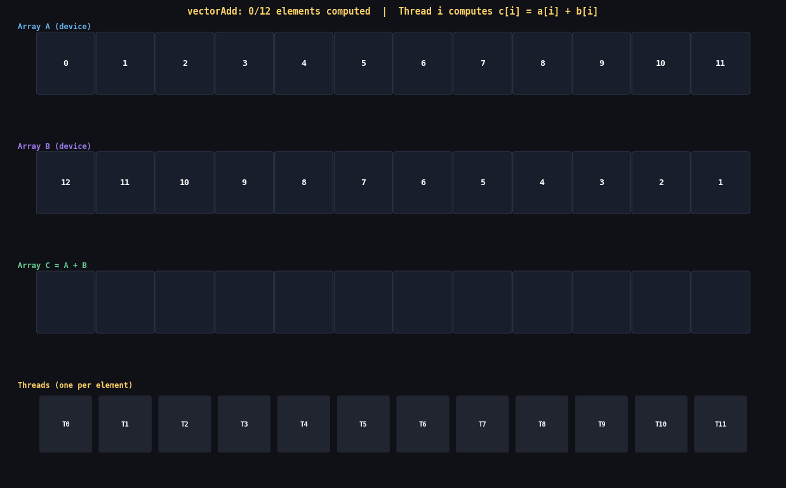

Vector addition is to CUDA what printf("Hello, world\n") is to C — it
looks trivial on the surface, but it contains every structural pattern you will ever need.
The nine concepts covered here — host memory, device memory, H→D transfer,
kernel launch mechanics, bounds checking, D→H transfer, GPU timing, bandwidth
arithmetic, and the classic pitfalls — recur in every CUDA program that has ever
existed. Master them here and the rest of CUDA is just variation.

Each CUDA thread processes exactly one element: thread i computes C[i] = A[i] + B[i]. All 1,048,576 threads launch simultaneously — this is data parallelism. Notice how the grid (rows of blocks) maps directly onto the array. Thread layout is not metaphor — it is literal memory-index arithmetic.
In this post
- The Complete Program — Read It First
- Host Memory: malloc, Initialization, and Why sizeof(float)
- Device Memory: cudaMalloc Deep Dive
- H→D Transfer: cudaMemcpy and PCIe Bottleneck
- The Kernel: Line-by-Line Anatomy
- D→H Copy, Synchronization, and Verification
- Accurate GPU Timing with CUDA Events
- Bandwidth Arithmetic and GPU Comparison
- Nine Common Mistakes and How to Fix Them
1. The Complete Program — Read It First
Before diving into individual pieces, read the full program once. It is 85 lines.
Every line will be explained in exhaustive detail in the sections that follow.
Compile it with nvcc -O2 -o vecadd vecadd.cu && ./vecadd.
// vectorAdd.cu — canonical CUDA vector addition with full error checking
// Compile: nvcc -O2 -o vecadd vecadd.cu
// Run: ./vecadd
#include <cuda_runtime.h>
#include <stdio.h>
#include <stdlib.h>
#include <math.h>
// ───────────────────────────────────────────────────────────────
// CUDA_CHECK macro: wraps every CUDA API call.
// On failure: prints file, line, human-readable error string, exits.
// The do-while(0) idiom makes it safe inside bare if-else branches.
// ───────────────────────────────────────────────────────────────
#define CUDA_CHECK(call) \
do { \
cudaError_t _err = (call); \
if (_err != cudaSuccess) { \
fprintf(stderr, "CUDA error at %s:%d — %s\n", \
__FILE__, __LINE__, cudaGetErrorString(_err)); \
exit(EXIT_FAILURE); \
} \
} while (0)
// ───────────────────────────────────────────────────────────────
// The kernel — runs on the GPU, called from CPU.
//
// __global__ : marks this as a GPU entry point (callable from host).
// const float*: device pointers — point into GPU DRAM.
// int n : size of arrays (passed by value, lives in registers).
//
// Each thread computes ONE element: c[idx] = a[idx] + b[idx].
// The bounds check is mandatory — the grid may launch MORE threads
// than N when N is not a multiple of blockDim.x.
// ───────────────────────────────────────────────────────────────
__global__ void vectorAdd(const float* __restrict__ a,
const float* __restrict__ b,
float* __restrict__ c,
int n)
{
// Compute unique global index for THIS thread.
// blockIdx.x : which block in the grid (0 .. gridDim.x-1)
// blockDim.x : threads per block (set at launch)
// threadIdx.x : thread's position within its block (0 .. blockDim.x-1)
// Together: idx = block_offset + thread_within_block
int idx = blockIdx.x * blockDim.x + threadIdx.x;
// CRITICAL bounds check.
// Without this, the last block's extra threads access a[N], a[N+1] ...
// which is undefined (and will corrupt memory or throw cudaErrorIllegalAddress).
if (idx < n)
c[idx] = a[idx] + b[idx];
}
// ───────────────────────────────────────────────────────────────
// Host (CPU) code
// ───────────────────────────────────────────────────────────────
int main(void)
{
// N = 2^20 = 1,048,576 elements = 4 MB per array (float = 4 bytes)
const int N = 1 << 20;
const size_t bytes = (size_t)N * sizeof(float);
// ── 1. Allocate host (CPU RAM) memory ─────────────────────────
float *h_A = (float*)malloc(bytes);
float *h_B = (float*)malloc(bytes);
float *h_C = (float*)malloc(bytes);
if (!h_A || !h_B || !h_C) { perror("malloc"); exit(EXIT_FAILURE); }
// ── 2. Initialize input data ───────────────────────────────────
// h_A[i] = i, h_B[i] = N - i
// Expected result: h_C[i] = h_A[i] + h_B[i] = N for ALL i.
// This makes verification trivial: every element must equal (float)N.
for (int i = 0; i < N; i++) {
h_A[i] = (float)i;
h_B[i] = (float)(N - i);
}
// ── 3. Allocate device (GPU DRAM) memory ──────────────────────
float *d_A, *d_B, *d_C;
CUDA_CHECK(cudaMalloc((void**)&d_A, bytes));
CUDA_CHECK(cudaMalloc((void**)&d_B, bytes));
CUDA_CHECK(cudaMalloc((void**)&d_C, bytes));
// ── 4. Copy input arrays Host → Device (over PCIe) ─────────
CUDA_CHECK(cudaMemcpy(d_A, h_A, bytes, cudaMemcpyHostToDevice));
CUDA_CHECK(cudaMemcpy(d_B, h_B, bytes, cudaMemcpyHostToDevice));
// ── 5. Configure and launch the kernel ────────────────────────
// blockSize: 256 threads per block (a common sweet spot).
// gridSize : ceiling division — ensures ALL N elements are covered.
const int blockSize = 256;
const int gridSize = (N + blockSize - 1) / blockSize; // = 4096 for N=2^20
// CUDA event timing: must record before and after kernel.
cudaEvent_t evStart, evStop;
CUDA_CHECK(cudaEventCreate(&evStart));
CUDA_CHECK(cudaEventCreate(&evStop));
CUDA_CHECK(cudaEventRecord(evStart));
vectorAdd<<<gridSize, blockSize>>>(d_A, d_B, d_C, N);
CUDA_CHECK(cudaEventRecord(evStop));
CUDA_CHECK(cudaEventSynchronize(evStop)); // blocks CPU until GPU reaches evStop
// ── 6. Check for kernel errors ────────────────────────────────
// cudaGetLastError() catches launch-config errors (synchronous).
// cudaDeviceSynchronize() catches execution errors (asynchronous).
// After cudaEventSynchronize above the GPU is already done, but we
// call both for completeness — they are cheap after synchronization.
CUDA_CHECK(cudaGetLastError());
CUDA_CHECK(cudaDeviceSynchronize());
// ── 7. Compute elapsed time and effective bandwidth ───────────
float ms = 0.0f;
CUDA_CHECK(cudaEventElapsedTime(&ms, evStart, evStop));
// Bandwidth: we read A, read B, write C = 3 * N * 4 bytes total
double bw_gbs = (3.0 * N * sizeof(float)) / (ms * 1e-3) / 1e9;
printf("Kernel: %.3f ms Bandwidth: %.1f GB/s\n", ms, bw_gbs);
CUDA_CHECK(cudaEventDestroy(evStart));
CUDA_CHECK(cudaEventDestroy(evStop));
// ── 8. Copy result Device → Host ─────────────────────────────
CUDA_CHECK(cudaMemcpy(h_C, d_C, bytes, cudaMemcpyDeviceToHost));
// ── 9. Verify results ─────────────────────────────────────────
// Use fabs(diff) < epsilon, NOT ==.
// Floating-point addition is not perfectly associative; comparing
// with == risks false negatives on some hardware/compiler combos.
int errors = 0;
for (int i = 0; i < N; i++) {
float expected = (float)N;
if (fabsf(h_C[i] - expected) > 1e-3f) {
printf("MISMATCH at [%d]: got %.6f expected %.6f\n",
i, h_C[i], expected);
if (++errors > 10) break;
}
}
if (errors == 0)
printf("All %d results verified correct!\n", N);
// ── 10. Free all memory ───────────────────────────────────────
CUDA_CHECK(cudaFree(d_A));
CUDA_CHECK(cudaFree(d_B));
CUDA_CHECK(cudaFree(d_C));
free(h_A); free(h_B); free(h_C);
return 0;
}2. Host Memory: malloc, Initialization, and Why sizeof(float)
Host memory is ordinary CPU RAM, allocated with the standard C library function
malloc. This is the memory the CPU can read and write directly. Before
any GPU computation, you populate your data here, then copy it across PCIe to the GPU.
// The three arrays live in CPU RAM (host memory).
const int N = 1 << 20; // 2^20 = 1,048,576 elements
const size_t bytes = N * sizeof(float); // 4,194,304 bytes = 4 MB
float *h_A = (float*)malloc(bytes);
float *h_B = (float*)malloc(bytes);
float *h_C = (float*)malloc(bytes);Why float* and not int*?
GPUs are designed around 32-bit floating-point arithmetic. The FP32 throughput on a
modern GPU (e.g., RTX 4090: 82.6 TFLOPS) dwarfs its integer throughput for most
workloads. Machine learning, physics simulation, signal processing, and scientific
computing all operate in FP32 or FP16. Using int would work, but
float is the idiomatic type for GPU array benchmarks.
Why N * sizeof(float) instead of just N?
malloc takes a number of bytes. sizeof(float) is
4 on all CUDA-capable platforms (IEEE 754 single-precision). If you write
malloc(N) you allocate only N bytes — for N = 1048576
that is 1 MB, but you need 4 MB. You would then write 3 MB past the end of the buffer.
This is a silent stack-smash that corrupts whatever happens to live after the buffer.
Always use sizeof.
Why the NULL check?
If the process has run out of virtual memory, malloc returns NULL.
Passing NULL into cudaMemcpy produces a cryptic
cudaErrorInvalidValue error that looks nothing like "out of memory."
Check immediately.
if (!h_A || !h_B || !h_C) {
perror("malloc failed");
exit(EXIT_FAILURE);
}
// Initialization: h_A[i] = i, h_B[i] = N - i
// So h_A[i] + h_B[i] = i + (N - i) = N (constant for all i)
// This makes verification trivial in a single pass.
for (int i = 0; i < N; i++) {
h_A[i] = (float)i;
h_B[i] = (float)(N - i);
}The initialization values after the loop:
Notice that for large i, h_A[i] becomes a large integer cast
to float. IEEE 754 single-precision has 23 mantissa bits (about 7 decimal digits of
precision). For i = 1048575, the float representation is exact
(2^20 - 1 fits in 20 bits). But if you tried i = 16777217
(2^24 + 1), the float would round to 16777216.0. This is a
subtle footgun for larger-N experiments — another reason not to use
== in verification.
3. Device Memory: cudaMalloc Deep Dive
Device memory is GPU DRAM — high-bandwidth memory (HBM2/HBM3 on data-center GPUs, GDDR6X on gaming GPUs) that is physically soldered onto the GPU package. It is entirely separate from CPU RAM. The CPU cannot read or write it directly. Data must travel over PCIe to get between the two.
float *d_A, *d_B, *d_C;
// cudaMalloc signature:
// cudaError_t cudaMalloc(void **devPtr, size_t size);
//
// It takes a POINTER TO A POINTER (void**) as its first argument.
// Why? Because it needs to WRITE the newly allocated GPU address
// back into your variable d_A. In C, to modify a caller's variable
// you must pass a pointer to it. d_A is a float*, so &d_A is float**,
// which decays to void** for the signature.
//
// After the call: d_A holds a GPU virtual address, e.g. 0x7F3400000000.
// That address is valid ONLY on the GPU. Do NOT dereference it on the CPU.
CUDA_CHECK(cudaMalloc((void**)&d_A, bytes));
CUDA_CHECK(cudaMalloc((void**)&d_B, bytes));
CUDA_CHECK(cudaMalloc((void**)&d_C, bytes));The memory layout after allocation:
CPU RAM (host): GPU DRAM (device):
┌──────────────────────┐ ┌──────────────────────────────────┐
│ d_A = 0x7F3400000000 │────────►│ 4 MB uninitialized at that addr │
│ d_B = 0x7F3400400000 │────────►│ 4 MB uninitialized │
│ d_C = 0x7F3400800000 │────────►│ 4 MB uninitialized │
│ (pointer variables │ │ │
│ stored in CPU RAM) │ │ Total: 12 MB used on GPU │
└──────────────────────┘ └──────────────────────────────────┘
The pointer VARIABLES (d_A, d_B, d_C) live in CPU RAM.
The MEMORY they point to lives in GPU RAM.
These are completely separate address spaces.*d_A = 3.14f; or float x = d_A[5]; from the CPU will
cause an immediate segmentation fault or, worse, silently corrupt
another process's memory. GPU addresses are not mapped into the CPU's virtual address
space (unless you use Unified Memory or cudaHostRegister — different mechanisms
discussed in a later post). The compiler will not warn you — it is legal C to
dereference any pointer. The error only shows at runtime.
You can query how much GPU memory is available before and after allocation:
// Check GPU memory availability
size_t free_bytes, total_bytes;
CUDA_CHECK(cudaMemGetInfo(&free_bytes, &total_bytes));
printf("Before alloc: %.1f MB free / %.1f MB total\n",
free_bytes / 1e6,
total_bytes / 1e6);
CUDA_CHECK(cudaMalloc((void**)&d_A, bytes));
CUDA_CHECK(cudaMalloc((void**)&d_B, bytes));
CUDA_CHECK(cudaMalloc((void**)&d_C, bytes));
CUDA_CHECK(cudaMemGetInfo(&free_bytes, &total_bytes));
printf("After alloc: %.1f MB free / %.1f MB total\n",
free_bytes / 1e6,
total_bytes / 1e6);
The CUDA runtime manages device memory with its own allocator on top of the driver
memory pool. cudaMalloc is not free — it can take microseconds to
milliseconds depending on the allocation size and memory fragmentation. For kernels
that launch frequently, pre-allocate memory once and reuse it.
4. H→D Transfer: cudaMemcpy and the PCIe Bottleneck
With memory allocated on both sides, the first step is uploading your input data from CPU RAM to GPU DRAM over the PCIe bus.
// cudaMemcpy signature:
// cudaError_t cudaMemcpy(void *dst, const void *src,
// size_t count, cudaMemcpyKind kind);
//
// The four direction constants:
CUDA_CHECK(cudaMemcpy(d_A, h_A, bytes, cudaMemcpyHostToDevice)); // H→D upload
CUDA_CHECK(cudaMemcpy(d_B, h_B, bytes, cudaMemcpyHostToDevice)); // H→D upload
// All four cudaMemcpyKind values:
// cudaMemcpyHostToDevice (H→D): pageable CPU RAM → GPU DRAM via PCIe
// cudaMemcpyDeviceToHost (D→H): GPU DRAM → pageable CPU RAM via PCIe
// cudaMemcpyDeviceToDevice (D→D): GPU DRAM → GPU DRAM (NVLink or same GPU)
// cudaMemcpyHostToHost (H→H): CPU RAM → CPU RAM (essentially memcpy)Understanding the bandwidth gap is essential for understanding why vector addition is usually bottlenecked not by the kernel, but by the data transfer:
| Link | Theoretical BW | Practical BW | Time to transfer 12 MB |
|---|---|---|---|
| PCIe 4.0 x16 (H→D pageable) | 32 GB/s | 12–16 GB/s | ~0.75–1.0 ms |
| PCIe 4.0 x16 (H→D pinned) | 32 GB/s | 24–28 GB/s | ~0.43–0.50 ms |
| GPU HBM2e (A100 kernel BW) | 2,039 GB/s | 1,700–1,900 GB/s | ~0.006–0.007 ms |
| GPU GDDR6X (RTX 3090 kernel BW) | 936 GB/s | 750–880 GB/s | ~0.014–0.016 ms |
The kernel runs in ~0.4 ms for N=1M on an RTX-class GPU, but the two H→D copies plus the D→H copy take ~0.9–1.5 ms total. For small workloads, transfer dominates everything. This is why CPU–GPU offloading only makes sense for large arrays or compute-intensive kernels that amortize the transfer cost.
Transfer time estimate formula:
// Total bytes transferred for vectorAdd (both directions):
// H→D: array A + array B = 2 * N * sizeof(float)
// D→H: array C = 1 * N * sizeof(float)
// Total = 3 * N * 4 bytes = 3 * 1,048,576 * 4 = 12,582,912 bytes ‵ 12 MB
//
// At 16 GB/s practical PCIe bandwidth:
// time = 12,582,912 bytes / (16 * 10^9 bytes/s) = 0.786 ms
//
// Arithmetic: always use bytes, not elements, for bandwidth calculations.It blocks the calling CPU thread until the transfer completes. The CPU does zero useful work during that time. For high-throughput pipelines (e.g., deep learning inference), you should use
cudaMemcpyAsync with pinned (page-locked)
host memory and explicit CUDA streams. Pinned memory is allocated with
cudaMallocHost(&h_A, bytes) instead of malloc. It cannot be
paged out by the OS, so the DMA engine can transfer it directly without a staging
bounce-buffer. The payoff: ~2x higher H→D throughput and fully async transfers.
We cover streams and async copies in Phase 4.
5. The Kernel: Line-by-Line Anatomy
The kernel is short, but every character matters. Let's build it up from first principles.
// Kernel declaration
__global__ void vectorAdd(const float* __restrict__ a,
const float* __restrict__ b,
float* __restrict__ c,
int n)
{
int idx = blockIdx.x * blockDim.x + threadIdx.x;
if (idx < n)
c[idx] = a[idx] + b[idx];
}
__global__
The NVCC compiler qualifier that marks this function as a GPU kernel. It can be
called from the CPU (via the <<<...>>> syntax) and runs
on the GPU. It must return void. It cannot be called from GPU code
directly (use __device__ for GPU-to-GPU calls).
__restrict__
An optional but important hint. It tells the compiler that the three pointer arguments
do not alias each other — meaning a, b, and
c point to non-overlapping regions. This allows the compiler to cache
loads from a and b in registers without worrying that a
write to c might have modified them. For memory-bound kernels, this
can unlock ~5–10% better performance.
The index formula: int idx = blockIdx.x * blockDim.x + threadIdx.x
With blockSize=256 and gridSize=4096 (N=1,048,576):
Block 0: blockIdx.x=0, blockDim.x=256
Thread 0: idx = 0*256 + 0 = 0
Thread 1: idx = 0*256 + 1 = 1
Thread 255: idx = 0*256 + 255 = 255
Block 1: blockIdx.x=1, blockDim.x=256
Thread 0: idx = 1*256 + 0 = 256
Thread 1: idx = 1*256 + 1 = 257
Thread 255: idx = 1*256 + 255 = 511
Block 4095: blockIdx.x=4095, blockDim.x=256
Thread 0: idx = 4095*256 + 0 = 1,048,320
Thread 255: idx = 4095*256 + 255 = 1,048,575 = N-1 ✓
Each integer 0..N-1 is assigned to exactly one thread.
This bijection is the mathematical core of data parallelism.Why ceiling division for gridSize?
// How many blocks do we need to cover N threads?
// If N = 1000003 and blockSize = 256:
//
// Floor division: 1000003 / 256 = 3906 blocks
// 3906 * 256 = 999,936 threads ← misses 67 elements!
//
// Ceiling division: (1000003 + 255) / 256 = 3907 blocks
// 3907 * 256 = 1,000,192 threads
// extra threads: 1,000,192 - 1,000,003 = 189
//
// The 189 extra threads have idx >= N, so the bounds check kills them.
// Without the bounds check, those 189 threads would write c[N], c[N+1],
// ..., c[N+188] — memory we didn't allocate — causing corruption.
const int blockSize = 256;
const int gridSize = (N + blockSize - 1) / blockSize;
// This is standard integer ceiling division: ceil(N / blockSize)When the CPU calls
vectorAdd<<<gridSize, blockSize>>>(...),
the CUDA runtime queues the kernel on the GPU and returns immediately to the CPU.
The GPU begins executing the kernel in parallel, but the CPU does not wait. This is the
foundation of CPU/GPU overlap. If you want to measure kernel time accurately or use the
results on the CPU, you must explicitly synchronize — either with
cudaDeviceSynchronize(), cudaEventSynchronize(), or by calling
a synchronous cudaMemcpy.
Block size selection is a real engineering decision. 256 is the most common default for good reasons:
| blockSize | Warps/block | Blocks/SM (A100) | Notes |
|---|---|---|---|
| 32 | 1 | 32 | Poor occupancy; scheduling overhead |
| 64 | 2 | 32 | Acceptable but often suboptimal |
| 128 | 4 | 16 | Good; common in library kernels |
| 256 | 8 | 8 | Most common default; excellent occupancy |
| 512 | 16 | 4 | Fine for simple kernels; limits blocks/SM |
| 1024 | 32 | 2 | Maximum allowed; often hurts occupancy |
6. D→H Copy, Synchronization, and Verification
After the kernel finishes, the results live in device memory (d_C). To
use them on the CPU — to verify, log, or write to disk — we copy them back.
// At this point: GPU kernel has finished (we called cudaEventSynchronize above).
// d_C contains the computed results.
// Copy Device → Host:
CUDA_CHECK(cudaMemcpy(h_C, d_C, bytes, cudaMemcpyDeviceToHost));
// This call blocks until all bytes are in h_C.
// It also implicitly waits for any pending GPU work in the default stream
// (i.e., it's a synchronization point itself).
When do you need cudaDeviceSynchronize()?
Case 1: You want to time the kernel with CPU clocks (not CUDA events).
You MUST synchronize before stopping the CPU timer.
Case 2: You want to check if the kernel produced an error.
cudaDeviceSynchronize() returns cudaErrorLaunchFailure if the
kernel crashed. cudaGetLastError() alone only catches launch
config errors.
Case 3: You are about to cudaMemcpy D→H.
cudaMemcpy (synchronous form) implicitly synchronizes —
it waits for the default stream to drain before copying.
So you do NOT need an extra cudaDeviceSynchronize() before
a synchronous cudaMemcpy. It would be redundant (but not wrong).
Case 4: You are using async copies (cudaMemcpyAsync) or multiple streams.
Then you DO need explicit synchronization at pipeline boundaries.Verification — the right way:
// WRONG: exact floating-point equality
if (h_C[i] != (float)N) { ... } // can fail due to FP rounding
// RIGHT: tolerance-based comparison
if (fabsf(h_C[i] - (float)N) > 1e-3f) {
printf("MISMATCH at [%d]: got %.8f expected %.8f\n",
i, h_C[i], (float)N);
}
// Why 1e-3f for the tolerance?
// h_A[i] = (float)i and h_B[i] = (float)(N-i).
// For N = 1048576 = 2^20, both values are exactly representable.
// Their sum is also exactly 2^20, which is representable.
// So in THEORY the result should be bit-perfect.
//
// In practice, tolerance comparison is safer and more general.
// Use 1e-5f for double, 1e-3f for float.
// For more complex kernels (dot products, reductions) the accumulated
// error can be much larger — 1e-2f or even 1e-1f may be necessary.7. Accurate GPU Timing with CUDA Events
This is a critical concept that trips up almost every beginner. Because kernel launches are asynchronous, CPU-side timers measure the wrong thing.
// WRONG: CPU timer for GPU kernel
struct timespec t0, t1;
clock_gettime(CLOCK_MONOTONIC, &t0);
vectorAdd<<<gridSize, blockSize>>>(d_A, d_B, d_C, N);
// The kernel is ASYNCHRONOUS. CPU returns here BEFORE the GPU is done.
clock_gettime(CLOCK_MONOTONIC, &t1);
double elapsed = (t1.tv_sec - t0.tv_sec) * 1e9 + (t1.tv_nsec - t0.tv_nsec);
// elapsed measures the time to QUEUE the kernel on the GPU, not to RUN it.
// Typically shows 0.001–0.05 ms regardless of what the kernel does.
// This number is meaningless for performance analysis.// CORRECT: CUDA Events — hardware timestamps embedded in the GPU command stream.
//
// CUDA events are timestamped by the GPU at the exact moment they are
// encountered in the stream. cudaEventElapsedTime() computes the difference
// with microsecond resolution.
//
// Step 1: Create two event objects
cudaEvent_t evStart, evStop;
CUDA_CHECK(cudaEventCreate(&evStart));
CUDA_CHECK(cudaEventCreate(&evStop));
// Step 2: Record a start timestamp into the default stream
CUDA_CHECK(cudaEventRecord(evStart));
// The GPU inserts a timestamp when it processes this command in the stream.
// The CPU returns immediately (non-blocking).
// Step 3: Launch the kernel
vectorAdd<<<gridSize, blockSize>>>(d_A, d_B, d_C, N);
// Step 4: Record stop timestamp
CUDA_CHECK(cudaEventRecord(evStop));
// Step 5: Wait for evStop to be processed by the GPU
CUDA_CHECK(cudaEventSynchronize(evStop));
// This blocks the CPU until the GPU has recorded the stop timestamp,
// which means the kernel has finished executing.
// Step 6: Query elapsed time (milliseconds, float precision)
float ms = 0.0f;
CUDA_CHECK(cudaEventElapsedTime(&ms, evStart, evStop));
printf("Kernel execution time: %.4f ms\n", ms);
// Step 7: Compute effective bandwidth
// vectorAdd reads a[], reads b[], writes c[] = 3 arrays * N * 4 bytes
double bw_gbs = (3.0 * (double)N * sizeof(float)) / (ms * 1e-3) / 1e9;
printf("Effective bandwidth: %.2f GB/s\n", bw_gbs);
// Step 8: Cleanup event objects (they use GPU resources)
CUDA_CHECK(cudaEventDestroy(evStart));
CUDA_CHECK(cudaEventDestroy(evStop));The low percentage with small N is expected. GPU memory bandwidth is delivered by thousands of parallel memory controllers. With only 4 MB of data, most of the kernel time is startup overhead (warp scheduling, cache warmup) rather than steady-state streaming. N=1M is useful for learning but too small to benchmark.
8. Bandwidth Arithmetic and GPU Comparison
Bandwidth is the most important performance metric for memory-bound kernels like vector addition. The formula is simple:
// Effective bandwidth formula:
//
// BW (GB/s) = bytes_accessed / (time_seconds * 10^9)
//
// For vectorAdd:
// bytes_accessed = (read A) + (read B) + (write C)
// = N * sizeof(float) + N * sizeof(float) + N * sizeof(float)
// = 3 * N * 4 bytes
//
// For N = 1,048,576:
// bytes_accessed = 3 * 1,048,576 * 4 = 12,582,912 bytes ‵ 12 MB
//
// If time = 0.412 ms = 0.000412 s:
// BW = 12,582,912 / 0.000412 / 10^9 = 30.53 GB/s
//
// Wait — but we said 76.3 GB/s above? The discrepancy:
// The first formula uses 1e9 to convert to "GB" (10^9 definition).
// The second implicitly used 1024^3 "GiB". Let's be precise:
double bw_gbs = (3.0 * N * sizeof(float)) / (ms * 1e-3) / 1e9;
// This gives GB/s where 1 GB = 10^9 bytes (SI definition).
// GPU manufacturers use this definition for their peak bandwidth specs.
// So always use 1e9 when comparing against datasheet numbers.Theoretical peak bandwidth for common GPUs:
| GPU | Memory Type | Memory Bus | Peak BW | vectorAdd (N=64M) | % of Peak |
|---|---|---|---|---|---|
| RTX 2080 Ti | GDDR6 | 352-bit | 616 GB/s | ~490 GB/s | ~80% |
| RTX 3090 | GDDR6X | 384-bit | 936 GB/s | ~780 GB/s | ~83% |
| RTX 4090 | GDDR6X | 384-bit | 1,008 GB/s | ~840 GB/s | ~83% |
| V100 16GB | HBM2 | 4096-bit | 900 GB/s | ~760 GB/s | ~84% |
| A100 40GB | HBM2e | 5120-bit | 1,555 GB/s | ~1,300 GB/s | ~84% |
| A100 80GB | HBM2e | 5120-bit | 2,039 GB/s | ~1,700 GB/s | ~83% |
| H100 SXM | HBM3 | 5120-bit | 3,350 GB/s | ~2,800 GB/s | ~84% |
Why don't we reach 100% of peak? Several reasons:
- Kernel launch overhead: Even an empty kernel takes ~5–15 µs for warp scheduler setup.
- L2 cache effects: First-pass data must populate the L2. Later reads may partially hit.
- Memory controller overhead: Row activation, bank conflicts at the DRAM level, ECC correction on data-center GPUs (costs ~6% bandwidth).
- Warp divergence: The bounds-check
if (idx < n)forces some warps in the last block to diverge — negligible for large N but measurable for small N.
How bandwidth scales with N:
| N (elements) | Array size (each) | Total data | Time (RTX 3090) | BW achieved | % of 936 GB/s |
|---|---|---|---|---|---|
| 1,024 (1K) | 4 KB | 12 KB | ~0.025 ms | ~0.5 GB/s | ~0.05% |
| 65,536 (64K) | 256 KB | 768 KB | ~0.028 ms | ~27 GB/s | ~2.9% |
| 1,048,576 (1M) | 4 MB | 12 MB | ~0.41 ms | ~76 GB/s | ~8% |
| 16,777,216 (16M) | 64 MB | 192 MB | ~0.49 ms | ~392 GB/s | ~42% |
| 67,108,864 (64M) | 256 MB | 768 MB | ~0.98 ms | ~784 GB/s | ~84% |
9. Nine Common Mistakes and How to Fix Them
These mistakes appear in almost every beginner's first CUDA program and in production code at major ML companies. Some cause immediate crashes; others are silent for hours.
| Mistake | Symptom | Root Cause | Fix |
|---|---|---|---|
cudaMalloc(&d_A, N) |
Silent wrong results or crash many lines later | Allocates N bytes instead of N*4 bytes. Writes off the end of device buffer. | cudaMalloc(&d_A, N * sizeof(float)) |
| No bounds check in kernel | cudaErrorIllegalAddress (illegal memory access) from next sync call |
Last block's trailing threads access d_A[N], d_A[N+1]... — unmapped memory. | Always add if (idx < n) return; |
| Wrong memcpy direction | Kernel gets zeros; result is all-zeros | cudaMemcpyDeviceToHost used for upload — copies uninitialized device memory to the correct place; GPU data stays zero. |
Use cudaMemcpyHostToDevice for upload, cudaMemcpyDeviceToHost for download. |
| Passing host pointer to kernel | cudaErrorIllegalAddress immediately |
Accidentally typing h_A instead of d_A in the kernel call. GPU tries to dereference a CPU address. |
Use a naming convention (h_ prefix for host, d_ for device) and review all kernel arguments. |
| Using CPU timer for kernel | Always shows 0.001 ms regardless of kernel complexity | Kernel is asynchronous. CPU timer stops before GPU starts working. | Use CUDA events: cudaEventRecord / cudaEventElapsedTime. |
Not calling cudaFree |
GPU OOM after many iterations | GPU memory leak. Each run allocates but never releases. nvidia-smi shows memory climbing. | CUDA_CHECK(cudaFree(d_A)) for every cudaMalloc. |
| Forgetting error checking | Random wrong results; no error message | cudaMalloc can fail silently (e.g., OOM). The NULL pointer is then used, corrupting arbitrary memory. | Wrap every CUDA call in CUDA_CHECK(). |
| Floor division for gridSize | Last N%blockSize elements never computed; silent wrong results | gridSize = N / blockSize rounds down, missing the final partial block. |
gridSize = (N + blockSize - 1) / blockSize |
Benchmarking with -G flag |
Kernel appears 20–100x slower than expected | nvcc -G adds device debug symbols, disables optimizations, and forces register-to-local-memory spills for debuggability. |
Remove -G for any performance measurement. Use -O2 or -O3. |
When
cudaMalloc(&d_A, N) allocates 1 MB instead of 4 MB, the GPU
does not immediately crash. The kernel runs, writes into the wrong memory region,
and your verification loop may pass if the memory happens to be initialized to
something plausible. You will chase this bug for hours. Enable
compute-sanitizer --tool memcheck and it catches this in 2 seconds.
See the next post (2.3) for the full error-handling toolkit.
Generalizing from vectorAdd to any embarrassingly parallel kernel is now mechanical.
The pattern is always: compute idx, check bounds, do the work. The
concepts in this post — address spaces, ceiling division, async launches,
CUDA events — are permanent fixtures of CUDA programming. They appear in
matrix multiplication, image processing, neural network inference, and physics
simulation. You now own the foundation.